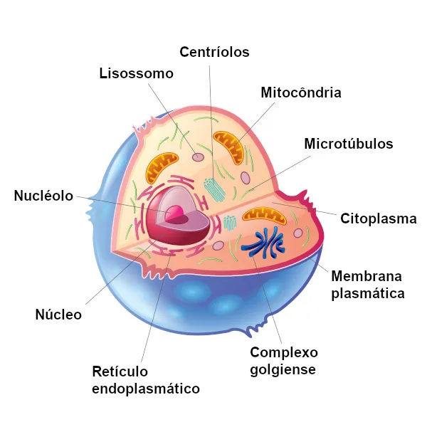

Célula Animal
O que é a célula animal?
A célula animal é a unidade básica da vida nos animais. Ela é responsável por realizar todas as funções necessárias para manter o organismo vivo, como produzir energia, sintetizar proteínas e eliminar substâncias tóxicas.
Principais características
Eucariótica: Possui núcleo definido, onde está o DNA.
Sem parede celular: diferente das células vegetais, a célula animal tem apenas a membrana plasmática, que controla a entrada e saída de substâncias.
Diversidade de organelas: contém várias estruturas especializadas que garantem o funcionamento da célula.
Organelas importantes
- Núcleo: armazena o material genético (DNA).
- Mitocôndrias: responsáveis pela produção de energia (ATP).
- Ribossomos: produzem proteínas.
- Complexo de Golgi: empacota e distribui substâncias.
- Lisossomos: fazem a digestão celular.
- Retículo endoplasmático liso e rugoso: participam da síntese de lipídios e proteínas.
- Centríolos: auxiliam na divisão celular.
Importância
Sem as células, não existiriam tecidos, órgãos ou sistemas. Elas são as “fábricas” do corpo animal, trabalhando de forma coordenada para manter a vida.
Organelas Celulares da Célula Animal

A imagem acima mostra a localização de cada organela
Função de cada organela
- Núcleo: O núcleo é considerado o centro de comando da célula animal. Nele está armazenado o DNA, que contém todas as informações genéticas necessárias para controlar as atividades celulares, como metabolismo, crescimento e divisão. O núcleo é envolvido pela carioteca, uma membrana que regula a troca de substâncias entre o núcleo e o citoplasma. Dentro dele, há ainda o nucléolo, responsável pela produção de ribossomos.
- Mitocôndrias: Conhecidas como as “usinas de energia” da célula, as mitocôndrias produzem ATP (adenosina trifosfato) por meio da respiração celular. Esse processo ocorre quando a glicose e o oxigênio são transformados em energia, que será usada em praticamente todas as atividades vitais. Além disso, as mitocôndrias têm DNA próprio, o que lhes permite se multiplicar de forma independente dentro da célula.
- Ribossomos: Os ribossomos são responsáveis pela síntese de proteínas. Eles podem estar livres no citoplasma, produzindo proteínas que atuam dentro da própria célula, ou ligados ao retículo endoplasmático rugoso, fabricando proteínas destinadas à secreção ou à formação de membranas. Essas proteínas são fundamentais para diversas funções, desde a construção de estruturas celulares até a atuação como enzimas e hormônios.
- Retículo Endoplasmático Rugoso (RER): O RER é uma rede de membranas cobertas por ribossomos em sua superfície, o que lhe dá o aspecto “rugoso”. Sua principal função é auxiliar na produção e no transporte de proteínas que serão modificadas e levadas a outras regiões da célula, muitas vezes passando pelo complexo de Golgi. Ele funciona como uma espécie de fábrica, garantindo que as proteínas estejam corretamente dobradas e direcionadas para o local certo.
- Retículo Endoplasmático Liso (REL): Diferente do rugoso, o REL não possui ribossomos aderidos. Ele participa da síntese de lipídios, como fosfolipídios e esteroides, que são componentes essenciais das membranas celulares. Além disso, o REL tem função importante na desintoxicação celular, pois ajuda a quebrar substâncias tóxicas que poderiam prejudicar o funcionamento da célula.
- Complexo de Golgi (ou Complexo Golgiense): O complexo de Golgi funciona como um centro de armazenamento, modificação e distribuição de moléculas produzidas no retículo endoplasmático. Ele recebe proteínas e lipídios, modifica-os quimicamente (quando necessário) e os empacota em vesículas para serem usados dentro da célula ou exportados para fora dela. Também participa da formação de lisossomos e da secreção de substâncias como hormônios e enzimas.
- Lisossomos: Os lisossomos são organelas repletas de enzimas digestivas que realizam a digestão intracelular. Eles decompõem partículas englobadas pela célula, restos de organelas danificadas e até microrganismos invasores. Dessa forma, atuam como um sistema de limpeza e reciclagem, garantindo a renovação e a manutenção do ambiente celular.